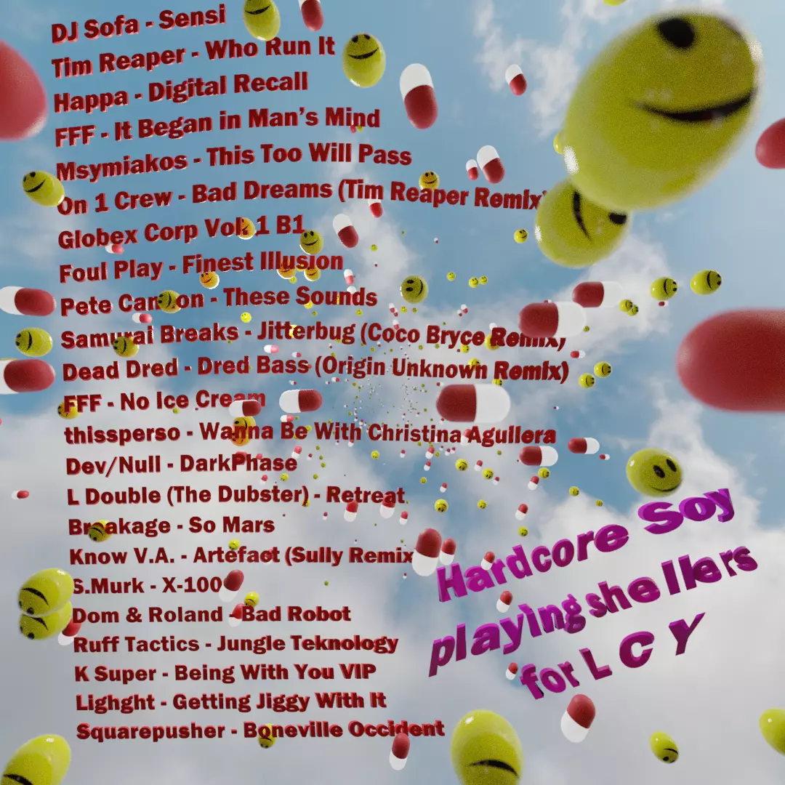

playing other people's music for six years and counting
links
[Tickets] The Beatriarchy x More Pussy 3mpire @ Gut Level, Sheffield
[Feature] Salt Magazine: The Joy of Queer Dance Floors in Manchester
[Article] Interview with AIAIAI Audio
[Link] Tough Act website
upcoming
past
selected mixes
FKA Hardcore @ Keep Hush, Bristol
Hardcore Soy on 20ft Radio live from Kyiv
Hardcore Soy guestmix for L C Y on Balamii Radio: One hour of mental jungle with lifetime bestie DJ Soyboi
Tracklist:
Threads Radio guest mix for Diessa: 30 minutes of turbo breakcore and cutting edge gabber
Non Binary Finery livestream: jungle for queers, queers for jungle!
art
Visuals for DJ Soyboi Hope Works livestream. Made using Blender's grease pencil, with shaders modified from 'Train Station' by Dedouze.
Artwork for the Club60 show on 1020 Radio. First time playing about with volumetric shading.